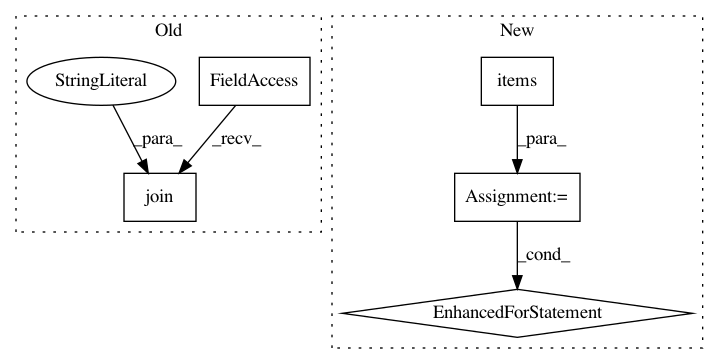

42d0ac6260a5dd15bf86e49aa1b30ca8fcadc6c2,secuml/core/classif/monitoring/interp/coeff.py,Coefficients,display,#Coefficients#Any#,51
Before Change
def display(self, directory):
self.final_computations()
with open(path.join(directory, "model_coefficients.csv"), "w") as f:
self.coef_summary.to_csv(f, index_label="feature")
After Change
if self.class_labels is None:
self.coefficients.display(directory)
else:
for _, coefficients in self.coefficients.items():
coefficients.display(directory)
def _init_class_coefficients(self, features_info, num_folds):
if self.class_labels is None:
self.coefficients = ClassCoefficients(features_info, None,
num_folds=num_folds)
In pattern: SUPERPATTERN
Frequency: 4
Non-data size: 5
Instances
Project Name: ANSSI-FR/SecuML
Commit Name: 42d0ac6260a5dd15bf86e49aa1b30ca8fcadc6c2
Time: 2019-05-17
Author: anael.beaugnon@ssi.gouv.fr
File Name: secuml/core/classif/monitoring/interp/coeff.py
Class Name: Coefficients
Method Name: display
Project Name: facebookresearch/pytext
Commit Name: ec54a0b75d93cab5ad407920f2bbfd2f33251cc9
Time: 2019-01-18
Author: zsc@fb.com
File Name: pytext/trainers/trainer.py
Class Name: Trainer
Method Name: train
Project Name: pfnet-research/chainer-chemistry
Commit Name: b90e4514134ab53277eb1dd5d4f3e7ac0077e9c9
Time: 2020-04-05
Author: ishiguro@preferred.jp
File Name: examples/molnet/predict_molnet.py
Class Name:
Method Name: main
Project Name: analysiscenter/batchflow
Commit Name: 222491435716cc587bde288964d65061847ecfc1
Time: 2018-05-04
Author: a.kozhevin@analysiscenter.ru
File Name: dataset/research/workers.py
Class Name: PipelineWorker
Method Name: run_job